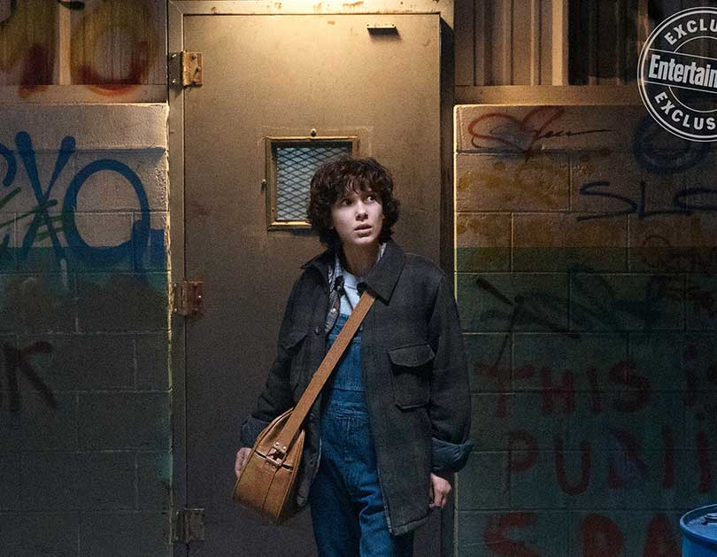
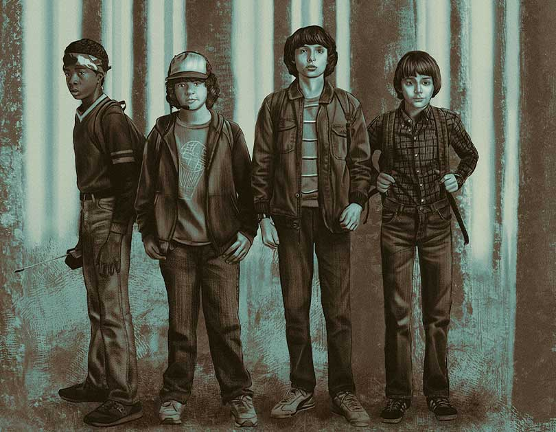
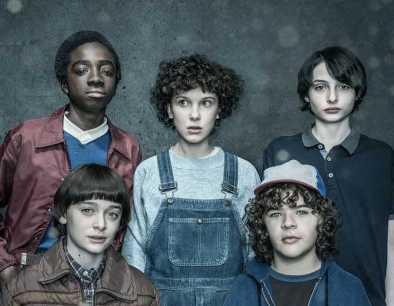
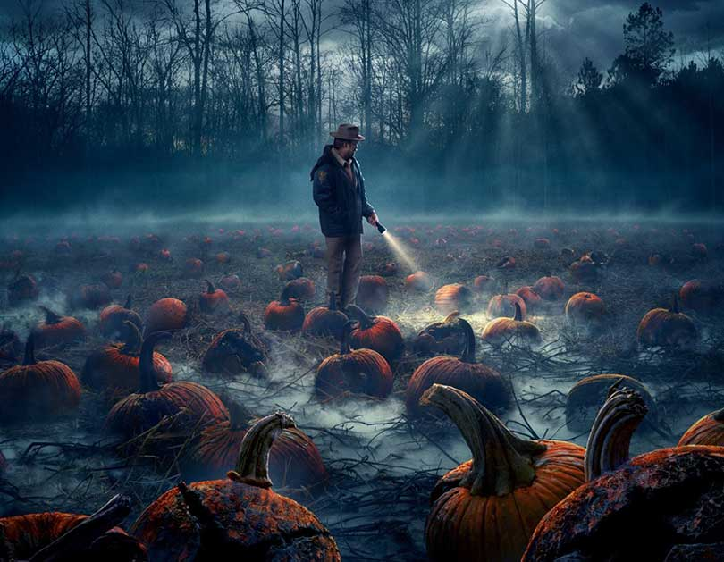
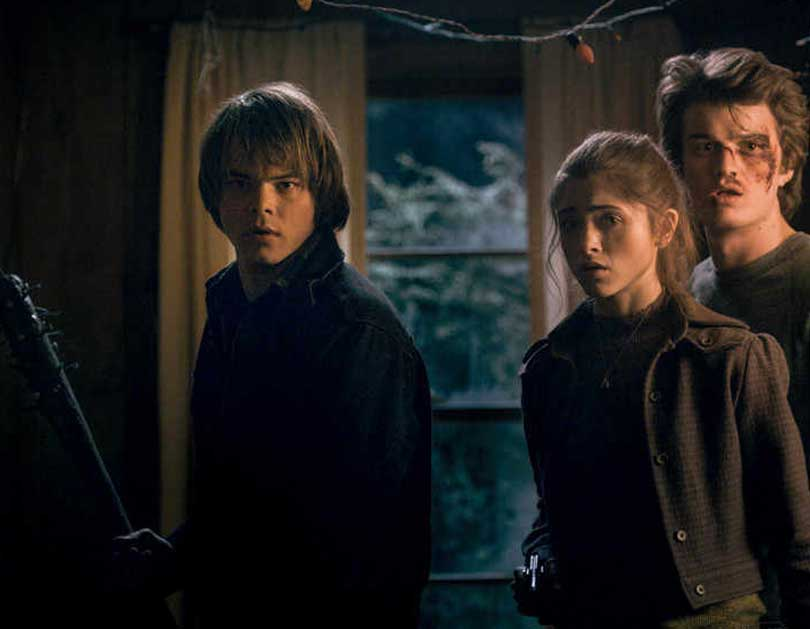
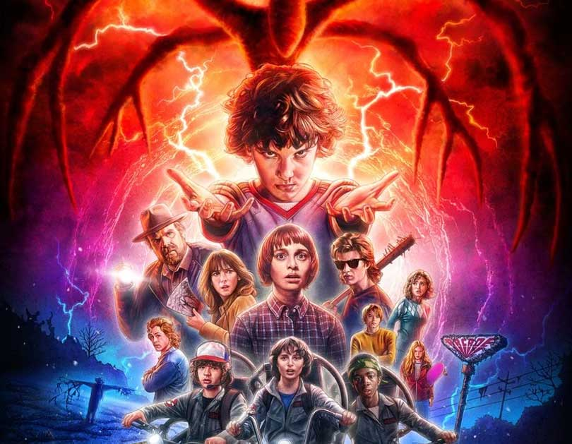

STRANGER THINGS: SEASON 2 REVIEW

Any show’s first season success doesn’t guarantee that the writers can replicate what they did before. With prestige comes the added pressure and expectation to not only equal but surpass what you did the previous year. Hence the common usage of the phrase “sophomore slump.” Stranger Things: Season 2 had everything working against it, with some (myself included) claiming that the ambiguous ending of the Season 1 finale was a perfect place to stop -- a one and done scenario. Netflix, along with creators/executive producers Matt and Ross Duffer, chose to ignore all the naysayers and quickly got to work. They’re building a big universe here, but planning and execution are two separate things. So, how did the brothers do with their second crack at Stranger Things? 
I’m thrilled to say that Stranger Things: Season 2 is a rousing success, which builds upon its already incredible cast and expertly expands the world of Hawkins into the same stratosphere of other great television epics, like Game of Thrones and The Walking Dead. So far, the Duffer Brothers plan to take over the streaming world is paying off nicely. Let’s dive into what made this season so great.

It’s rare for a series, especially one dealing with kids, to explore the mental ramifications of what going through a traumatic event looks like. It’s easier to just pretend like the events with the Demogorgon, Eleven’s disappearance, and Barb’s lack of justice didn’t happen; forgetting all of those essential stories would have been simpler, but not nearly as compelling.
The writers do a marvelous job of adding depth to their ensemble, by boldly exploring their post-traumatic stress as a direct result of the events surrounding the Upside Down. Right from the beginning, we know that there’s something not quite right with Will. Noah Schnapp, who was relegated to another dimension for most of Season 1, delivers a breakout performance. His classmates call him “zombie boy,” since they all believed he was dead. Now he’s just the weird kid that got lost in the woods. Not an easy thing to face every day at school.

All the other boys are there too. Credit again goes to the writers for giving Dustin (Gaten Matarazzo) and Lucas (Caleb McLaughlin) more screen time. Lucas and his family are a joy to watch, while Dustin forms some exciting bonds you won’t see coming. Finn Wolfhard’s portrayal of Mike is still captivating, as we watch him struggle with Eleven’s disappearance. It’s been nearly a year since she left, but Mike hasn’t gotten over it.
A new school year wouldn’t be the same without new students to fill its halls. Maxine (Sadie Sink), or Max as she likes to be called, give the boys a run for their money. Sink’s performance is beyond her years and makes a welcomed addition to the cast. Her step-brother Billy (Dacre Montgomery) is another story. Without going into massive spoiler territory, let’s just say his character is the weakest of the bunch and the slowest to develop.
Thankfully, Millie Bobby Brown’s return as Eleven doesn’t suffer in the slightest. It’s difficult to say anything about her arc without revealing too much, but there are fascinating new places for her to go and people to meet this season. Again, the Duffer Brothers are expanding the Stranger Things universe beyond the confines of Hawkins, so expect to journey to new locations.

Does Stranger Things 2 Keep Up the Momentum?
But what about that big monster featured on all the posters and trailers? Yeah, so there’s a new threat that makes last year’s Demogorgon look like a cute bunny rabbit. This shadow demon is the main antagonist, and he’s a formidable foe. The Upside Down is alive and well here, but with a villain this big, more of Hawkins is getting pulled into the madness.
It’s not just physical dangers lurking around every corner. Another aspect of this season that makes it so captivating, has to do with the mental stressors placed on the kids and their parents.There’s no better actor on the planet better at portraying heightened levels of stress than Winona Ryder. Joyce is back, and with the events of last year still fresh in her mind, Will is having a tough time getting her off his back. Some might call her performance over-bearing, but I think she’s perfect for the role. Ryder and Schnapp share some compelling scenes together in later episodes.
Even with all of its strengths, Stranger Things: Season 2 is not without its faults, and there are moments when abrupt shifts in tone hurt certain episodes. More specifically, in Chapter 5 (“Dig Dug”), which is the first of two episodes directed by Academy Award-winning writer/director Andrew Stanton (WALL-E), the show quickly turns into a joke fest, resulting in the most unbalanced hour of the season. Thankfully, it’s not a complete disaster, due to a riveting performance by Millie Bobby Brown, but it does feel out of place in a season that dares to illustrate the harsh realities of a world about to be devastated by another dimension. The writers must have been worried that Season 2 was getting too morose, which is a shame since it breaks up the pace established by the previous four outings. Don’t worry, the rest of the season gets better from there.

The Verdict
If it isn't apparent already, Stranger Things: Season 2 was a joy to watch. Even in its weaker moments, there are still excellent performances from both new and returning cast members. The Duffer Brothers kept everything you loved about Season 1 and built a bigger, better version of the series that won’t leave you feeling disappointed. There are more unexpected pleasantries to look out for as you start your binge, like Sean Astin’s portrayal of Bob Newby and returning acting-powerhouse David Harbour as Sheriff Hopper. Taking a journey alongside your favorite Hawkins citizens is a great way to spend your weekend.
Images from the second season
Link to the original text IGN
Categories
- #strangerthings
- #netflix
- #season2
- #eleven
TRENDS:

{kind=link}
{kind=link}
{kind=link}
{kind=link}
{kind=link}
{kind=link}
{kind=link}
{kind=link}
{kind=link}
{kind=link}
{kind=link}